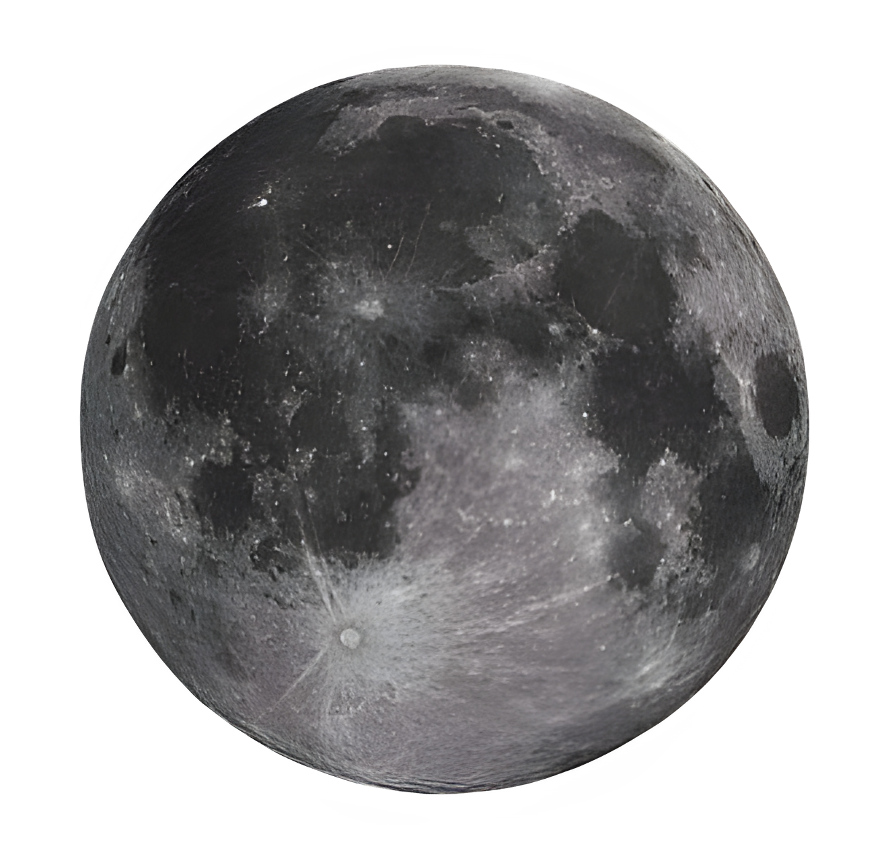
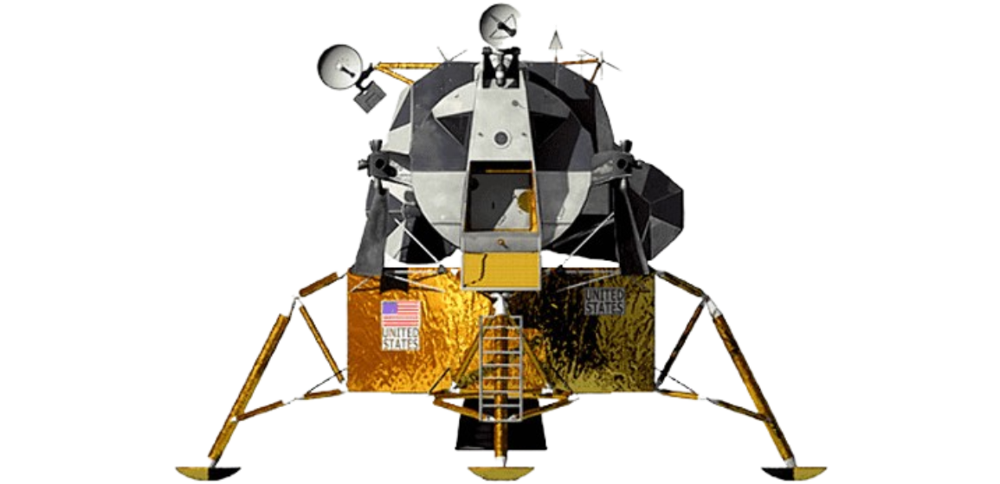

Have you ever wondered
The Fates of
NASA's Discarded
Equipments?
Let's get started
Shall we?.
It all starts in the
1960's


The first ever succesful
crewed lunar landing in the history of mankind.
The Apollo 11.
Then lots more Apollo missions follow.
Well...
Landing on the Moon was just the
Beginning.
Some things made it back. Some things doesn't.
The Astronauts made it back of course.
Let's take a closer look
at what's left behind.

Isn't that the American flag?
To mark their Achievements
the Americans left their flags
all over the moon!